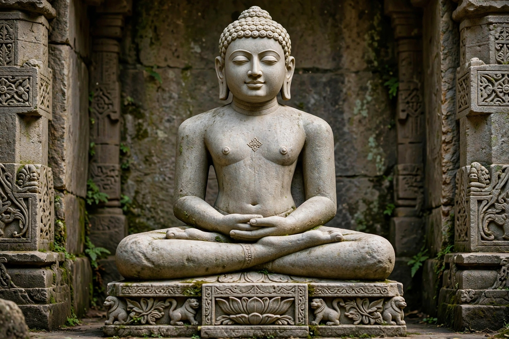

In Jainism, a Tirthankara (Sanskrit: "ford-maker") is a saviour and spiritual teacher of the dharma, who has conquered the cycle of rebirth (saṃsāra) and made a path — a ford across the river of suffering — for others to follow.
The present time cycle has 24 Tirthankaras. The first is Rishabhanatha (Adinath), credited in tradition with founding civilisation; the 23rd is Parshvanatha (c. 9th–8th century BC), the earliest generally accepted as historical; and the 24th and last is Mahavira (c. 599–527 BC), who reorganised the Jain community.
Tirthankaras are depicted seated in lotus posture or standing in kayotsarga, with serene expressions, elongated earlobes and identifying emblems (lañchhana) — such as Rishabha's bull — carved below the seat. Images appear nude in Digambara tradition and in white garments in Śvetāmbara tradition.
Having attained kevala jnana (omniscience) and then moksha, Tirthankaras are not gods who intervene in the world but exemplars and teachers venerated by Jains.